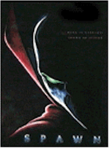
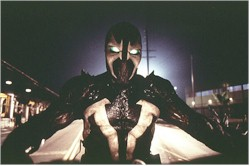
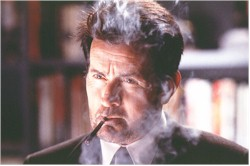
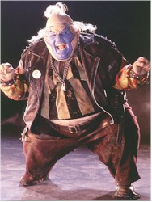

Contents | Features | Reviews | Books | Archives | Store |
 |
|
Spawn
Review by Carrie
Gorringe
Posted 1 August 1997
|  | Directed by Mark A. Z. Dippe Starring John Leguizamo, Michael Jai
White, Screenplay by Alan McElroy, |
In general, it appears to be an unwritten rule that the genesis of comic-book characters has to involve some form of violent catalyst to inspire the super-hero (or heroine). Superman suffered exile, Batman’s parents died at the hands of a thug during a robbery, and the list could go on ad infinitum. Would it hardly be surprising to note how much greater the violence quotient is for cult comic figures?
Take the example of Todd McFarlane’s Spawn, in actuality a government assassin named Al Simmons (Jai White), who is tired of killing and wants to go straight. Simmons’ plans run afoul of the foul plans of his supervisor, Jason Wynn (Sheen). Wynn is on the trajectory so common to evil megalomanicas: namely, world domination through world annihilation, and he has, in good Faustian tradition, sold his soul to the devil in order to get it.. Simmons is in his way and is promptly, if gruesomely, dispatched to hell, where he gets an offer to lead another form of Armageddon. He agrees to do so in exchange for the chance to see his wife (Randle) one more time. To prepare him for his quest, Simmons, now transformed into the third-degree-burn survivor called Spawn, is equipped with various secret devices and super powers. He is also provided with that other stock device: the Manichean choice, as two father-figures from both ends of the morality spectrum – the sinister, mordantly witty, Clown (Leguizamo) and the noble Cogliostro (Williamson) – fight to control what is left of his conscience.
To recount: we have now been given a superhero whose impetus for behavior stems from violence, deceit at the hands of a two-faced superior, the bestowing of unique superpowers on the hero, and the struggle between good and evil. Everything seems to be present and accounted for. Mentioning anything else about the narrative would be to reveal too much, except to add that there are several deliriously deft twists which maintain the narrative tension at an entertaining level, in spite of the need for long expository passages to establish the characters and their motivations; there’s even a dollop or two of tension to be wrung from the self-conscious in-jokes that dot the film’s landscape, as the audience waits for the punch line to hit it square in the face (one of the funniest jokes – because so shameless – involves Sheen and the title of his best-known film). The film’s dark tone is on unabashed display and comes closest in style to Tim Burton’s work on the original Batman. In fact, Spawn is the nightmarish, pulp-level meditation on internal turmoil that Batman should have and could have been, had Batman’s tone not been softened by Michael Keaton’s rather diffident performance in the title role. Granted, Spawn also contains enough gut-wrenching violence to render it perhaps a little too extreme for mainstream audiences, but at least audiences in step with McFarlane’s outrageous vision won’t feel that they have gotten the cinematic equivalent of the Emperor and his new clothes.
Oh, by the way, I should mention that the film version of Spawn also has a strong pedigree in two other respects: the creative team behind the film are all Industrial Light and Magic alumni (and the film benefits from some truly creative special effects, courtesy of ILM, among others). The stunning opening credits set a laudably high technical standard, and the film never flags in its maintenance (what else would you expect from Lucas and Co.?). Spawn also has actors who are taking their roles seriously instead of relying upon the special effects as an excuse for thespian slumming (in particular, Leguizamo – Mr. "Mambo Mouth" himself – is especially exquisite in his scatological exploits, and Martin Sheen hasn’t been this powerful on screen, and as terrifying, since The Dead Zone). Although Spawn may mine limited territory, it does it so very well that it is deserving of action films of the summer.
Contents | Features | Reviews | Books | Archives | Store
Copyright © 1999 by Nitrate Productions, Inc. All Rights Reserved.